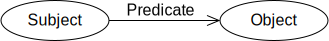
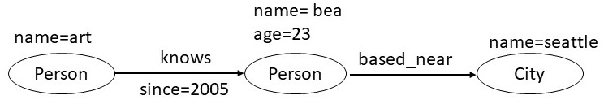
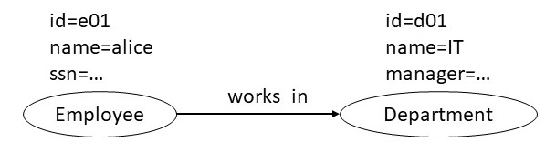

Two popular graph data models are Resource Description Framework
(RDF), and the property graph (PG) model. The query language for RDF
is SPARQL, and the query language for the property graph model is
Cypher. In this chapter, we present an informal overview of both of
these data models and give example queries for them. This chapter
introduces the two models without giving a comprehensive technical
overview. We consider translation of data represented using one of
the models to data represented in the other, and also compare these
graph data models to using a conventional relational data model.
2. Resource Description Framework
RDF is a framework for representing information on the web. The RDF
data model and its query language SPARQL have been standardized by the
World Wide Web Consortium.
2.1 RDF Data Model
An RDF triple, the basic unit of representation in this model,
consists of a subject, a predicate, and an object. A set of such
triples is called an RDF graph. We can visualize an RDF triple as a
node and a directed edge diagram in which each triple is represented
as a node-edge-node graph as shown below.

There can be three kinds of nodes: IRIs, literals, and blank
nodes. An IRI is an Internationalized Resource Identifier used to
uniquely identify resources on the web. A literal is a value of a
certain data type, for example, string, integer, etc. A blank node is
a node that does not have an identifier, and is similar to an
anonmyous or an existential variable.
As an example illustration of the information expressed using RDF,
let us take the example of representing knows relationship
between people. In this example, a person with name
art is denoted by the IRI http://example.org/art. In the
notation used below the IRIs can be abbreviated by defining a
prefix. For example, we have defined foaf as a prefix
for <http://xmlns.com/foaf/0.1/>. The
relation knows is defined by the IRI
http://xmlns.com/foaf/0.1/knows
@prefix foaf: <http://xmlns.com/foaf/0.1/>
@prefix ex: <http://example.org/>
ex:art foaf:knows ex:bob
ex:art foaf:knows ex:bea
ex:bob foaf:knows ex:cal
ex:bob foaf:knows ex:cam
ex:bea foaf:knows ex:coe
ex:bea foaf:knows ex:cory
ex:bea foaf:age 23
ex:bea foaf:based_near _:o1
The last two triples illustrate a literal node and a blank
node. The value of foaf:age is the integer 23 which is an
example of a literal. A string is another common literal data
type. The value of foaf:based_near is an anonymous spatial
thing which is indicated by an underscore as a node
identifier. Here o1 is an internal data identifier which has no
significance outside the context of the present graph.
An RDF vocabulary is a collection of IRIs intended for use in RDF
graphs. The IRIs in an RDF vocabulary often begin with a common
substring known as a namespace IRI. In the example
above, <http://xmlns.com/foaf/0.1/> is a name space
prefix. Some namespace IRIs are associated by convention with a
short name known as a namespace prefix. In the example above, we
defined foaf and ex as name space prefixes.
RDF graphs are atemporal in the sense that they provide a static
snapshot of data. With suitable vocabulary extension, they can express
information about events, or other dynamic properties of
entities.
An RDF dataset is a collection of RDF graphs and comprises exactly
one default graph that can be empty and does not need to have a name,
and one or more named graphs. Each named graph consists of an IRI or a
blank node that represents its name and the RDF graph.
2.2 SPARQL Query Language
SPARQL (pronounced "sparkle", a recursive acronym for Simple
Protocol and RDF Query Language) is a query language to retrieve and
manipulate data stored in the Resource Description Framework (RDF).
SPARQL can be used to express queries across diverse data sources,
whether the data is stored natively as RDF or viewed as RDF via
middleware. SPARQL contains capabilities for querying required and
optional graph patterns along with their conjunctions and
disjunctions. SPARQL also supports extensible value testing and
constraining queries by source RDF graph. The results of SPARQL
queries can be sets or RDF graphs.
Most forms of a SPARQL query contain a set of triple patterns called
a basic graph pattern. Triple patterns are like RDF triples except
that each of the subject, predicate and object may be a variable. A
basic graph pattern matches a subgraph of the RDF data when RDF terms
from that subgraph may be substituted for the variables in the graph
pattern and the result is the RDF graph equivalent to the sub graph.
The example below shows a SPARQL query against the data graph shown above
and queries for the people known by a person. The query consists of two parts: the SELECT
clause identifies the variables to appear in the query results, and
the WHERE clause provides the graph pattern to match against the
data graph. The graph pattern in this example consists of a
single triple with a single variable (?person) in the object
position.
Above query returns the following result set on our data graph.
?person1
?person2
<http://example.org/bob>
<http://example.org/cal>
<http://example.org/bob>
<http://example.org/cam>
<http://example.org/bea>
<http://example.org/coe>
<http://example.org/bea>
<http://example.org/cory>
Each solution gives one way in which the selected variables can be
bound to RDF terms so that the query pattern matches the data. The
result set gives all the possible solutions. In the above example, two
different subsets of the data provided the matches that resulted in
the answers. Above examples illustrate a basic graph pattern match;
all the variables used in the query pattern must be bound in every
solution.
The SPARQL queries can return blank nodes in the result. The
identifiers for blank nodes used in the result may not be the same
as the one used in the original RDF graph. The WHERE class in a
SPARQL query provides a way to match against specific literal types
and to filter the results based on numerical constraints.
The SPARQL queries have various forms. The SELECT form that we have
considered until now returns the variable bindings. The CONSTRUCT
form can be used to create results that define an RDF graph. The
queries can also specify more than one graph patterns such that all
of them or some of them have to match against the RDF data. The
query results can also be further processed by providing directives
to order them, eliminate duplicate results, or to limit the total
number results returned.
3. Property Graphs
Proeprty graphs data model is used by many popular graph database
systems. Unlike RDF that was explicitly motivated by a need to model
information on the web, the graph database systems handle general
graph data. Graph database systems distinguish themselves from
traditional relational databases with little reliance on a
predefined schema, and the optimization of operations that involve
graph traversals. In this section, we will consider the property
graph data model and the Cypher language that is used to query
it.
3.1 Property Graph Data Model
A property graph data model consists of nodes, relationships and
properties. Each node has a label, and a set of properties in the form
of arbitrary key-value pairs. The keys are strings and the values are
arbitrary data types. A relationship is a directed edge between two
nodes, has a label, and can have a set of properties.
In the property graph shown below art and bea are two
nodes. The node for bea has two properties: age
and based_near. These two nodes are connected by an edge
labeled as knows. This edge has the property since that indicates
the year from which art and bea have known each other.
While defining a property graph data model, one has to decide the
nodes, the edges, and the properties. For example, one can question
why not to represent a city also as a node, and create an edge
labeled as based_near between a person and the city instead
of making them a property of the node representing a person. In
general, any value that may be related to multiple other nodes in the
graph such that there is either an application requirement to
traverse those relationships efficiently, or we need to associate
addiational properties with how it is related to other nodes, should
itself be represented as a node. In this example, if we intend to
traverse the based_near relationships, the following design
would be more appropriate. Furthermore, it allows us to associate
any additional properties with the
based_near relationship.

3.2 Cypher Query Language
Cypher is a language for querying data represented in a property graph
data model. The design concepts from Cypher are being considered for adoption
into an ISO standard for a graph query language. In addition to
querying, Cypher can also be used to create, update and delete data from a
graph database. In this section, we will introduce only the query
capabilities of Cypher.
The example below shows the Cypher query against the data graph
considered earlier and queries for the the persons known
by art. The query consists of two parts: the MATCH clause
specifies a graph pattern that should match against the data graph
and the RETURN clause specifies what should the query return. The
graph pattern is specified in an ASCII notation for graphs: each
node is written in parentheses, and each edge is written as an
arrow. Both node and relation specifications include their respective types, and
any additional properties that should be matched.
MATCH (p1:Person {name: art}) -[:knows]-> (p2: Person)
RETURN p2
In the example below, we show the Cypher query that asks for all the friends of
a person that have existed since 2010.
MATCH (p1:Person {name:art}) -[:knows {since: 2010}]-> (p2: Person)
RETURN p2
From the above query, we can see that it is equally easy to
associate properties with relations as it is with nodes. A person
may have friends from years before 2010, and if we wanted the query to
include those friends as well, it can be done by adding a WHERE clause.
MATCH (p1:Person {name:art}) -[:knows {since: Y}]-> (p2: Person)
WHERE Y <= 2010
RETURN p2
Through the WHERE clause, it is possible to specify a variety of
filtering constraints as well as patterns that can be used to
restrict the query results. In addition, Cypher provides language
constructs for counting results, grouping data by values, and
finding minimum/maximum values, and other mathematical and
aggregation operations.
4. Comparison of Data Models
In this section, we will start off by comparing the RDF and the
property graph data models. We will then compare both of them to
relational data model.
4.1 Comparison of RDF and Property Graph Data Models
Beyond the features of RDF considered in the previous section, it
has several additional layers, for example, RDF schema, Web Ontology
Language (OWL), etc. Our discussion here will not consider those
advanced features. The primary differences between the basic RDF
model and the property graph model are that: (a) the property graph
model allows edges to have properties (b) the property graph model
does not require IRIs and does not support blank nodes. To support
the edge properties, the RDF model supports an extension known
as reification. We will consider this extension, and then
describe different ways in which the data represented in either data
model can be converted into the other format.
To understand reification in RDF, consider a situation in which we
need to represent the provenance of the triple shown below. This
triple asserts the weight of an item. The literal "2.4"^^xsd:decimal
denotes the number 2.4 which is of type xsd:decimal. We are interested
in specifying the person who took this measurement.
We can associate provenance information with the above triple using
the RDF reification vocabulary. The RDF reification vocabulary
consists of the type rdf:Statement, and the properties rdf:subject,
rdf:predicate, and rdf:object. Using the reification vocabulary, a
reification of the statement about the weight of the item would be
given by assigning the statement an IRI such as
exproducts:triple12345 (so statements can be written
describing it), and then describing the statement as shown below.
The last triple in the list below specifies the desired provenance
information by asserting the identifier for the person who created
the original triple.
These statements say that the resource identified by the IRI
exproducts:triple12345 is an RDF statement, that the subject of the
statement refers to the resource identified by exproducts:item10245,
the predicate of the statement refers to the resource identified by
exterms:weight, and the object of the statement refers to the
decimal value identified by the typed
literal "2.4"^^xsd:decimal. The final statement asserts
that exproducts:triple12345 was provided by the person with the
IRI exstaff:8574.
With the above reification vocabulary, it becomes possible to mechanically translate
the data in the property graph model to RDF. Each node and its property value in the property
graph data becomes a triple. Each edge in property graph data also becomes an RDF triple.
Every edge in the property graph data that has a property is reified, and the properties
of the edge become the triples of the reified edge that use the reification vocabulary
as explained above.
To translate data expressed in the RDF model to the property graph
model, a straightforward approach is to map each node and an edge
to the corresponding node and an edge in the property graph. A
possible refinement is that we create new property nodes only for
those nodes that are either IRIs or blanks nodes. For any triple in
RDF in which the target is a literal, we make it a property of the
node in the property graph data.
In addition to converting data between RDF and property graph
models, we are also interested in converting the syntactic form of
data and the queries. For property graph model, there is no syntatic
standard for their expression, and therefore, a custom translator
needs to be written for the format one is working with. Once a
translation scheme is fixed between the two data models, the
corresponding translation between SPARQL and Cypher is
straightforward.
4.2 Comparison of Graph Models and Relational Data Model
We can define a translation to and from the data expressed using
relational model to data expressed using the RDF model and the
property graph model. Some argue that the graph models are easier for
humans to understand and that the graph query languages are more
compact for certain queries. In principle, we can implement a user
interface to visualize the relational schemas, and implement a query
compiler that can map a query written in a graph query language into
an equivalent form that operates on the relational tables. If an
application requires navigating relationships,
a graph database has an edge as it is optimized for graph traversals. For the
rest of the section, we will consider an example to illustrate how the
graph queries can be more compact than the corresponding relational
queries, and conclude by mentioning the systems that attempt to
support graph processing on a relational system.
To understand the contrast between graph queries and relational
queries, we will consider a simple example in which we have three
tables: an Employee table, a Department table, and an
Employee-Department join table. An employee can be associated with
multiple departments because of which they are stored in separate
tables. Two tables are related with a join table that contains
their foreign keys employee id and department id. We show these tables
below.
Employee
id
name
ssn
e01
alice
...
e02
bob
...
e03
charlie
...
e04
dana
...
Employee_Department
employee id
department id
e01
d01
e01
d02
e02
d01
e03
d02
e04
d03
Department
id
name
manager
d01
IT
...
d02
Finance
...
d03
HR
...
Given the tables as shown above, suppose we wish to list the
employees in the IT department. The SQL query to perform this task
will first need to join the employee and
the department tables, and then filter the results on
the department name. The required query is shown below.
SELECT name FROM Employee
LEFT JOIN Employee_Department
ON Employee.Id = Employee_Department.EmployeeId
LEFT JOIN Department
ON Department.Id = Employee_Department.DepartmentId
WHERE Department.name = "IT"
If we were to represent the same information using a property graph
data model, we will have a node for department and
employee. The employee ssn and department name
will be the node properties. The
Employee_Department table will be captured using a relationship in the property graph representation. If
the Employee_Department table had additional attributes, they will be
represented as edge properties in the property graph data model. A
sample node in such a property graph is shown below.

We can query this data using the following Cypher query:
MATCH (p:Employee) -[:works_in]-> (d:Department)
WHERE d = "IT"
RETURN p
The Cypher query above is much more compact than its SQL
counterpart. This compactness stems from the fact that the joins
are naturally captured using graph patterns.
There have been some recent systems that represent the relational
data in a schema free manner by representing each node property as a
triple in one table, and each edge property as a four tuple in a
second table. Such systems provide a query planner that accepts
queries in a language like Cypher that computes an efficient
execution plan over the two relational tables. Such systems are able
to leverage the existing relational technology, and are also able to
perform optimizations when some of the legacy data is in a traditional
relational table.
5. Limitations of a Graph Data Model
A graph data model is not the most appropriate choice when the
application contains primarily numeric data, and the reliance on
only binary relationships is limiting. For example, the relational
model is more effective in capturing timeseries data such as
evolution of the population of a country. Even though we can
represent such data using a graph, but it results in a huge number
of triples without necessarily giving us advantages of better
conceptual understanding and/or faster query performance through
graph traversals. There are many relationships that cannot be
naturally represented using binary relations. For
example, between relation that captures that an
object A is between two other objects B and C
is inherently a ternary relationship. A ternary relationship can be
transformed into a set of binary relationships using the
reification technique, but by doing so, we lose the advantage of
better conceptual understanding that we get from the graph data
model. Graphs are also not the most natural representation for
mathematical equations and chemical reactions where easy to
understand domain specific representations exist.
6. Summary
In this chapter, we reviewed two popular graph data models: RDF and
property graphs. RDF was devised for representing information over
the web, and makes an extensive use of IRIs. The property graph
model is a popular choice in many graph database systems, and
provides a direct support for associating properties with both nodes
and edges. Even though there are small differences between the two
models, it is possible to inter-translate the data represented in
one to the other. SPARQL is the query language for accessing data
in RDF, and Cypher is the corresponding language for the data
represented in property graphs. In a graph query language, queries
requiring traversals are much more compact in comparison to an
equivalent formulation in a relational data model. A graph data
model can also provide a better user understanding of the knowledge
in the subject domain. There are some systems that use a relational
database as the storage for graph data and provide query optimizers
to still allow queries to be expressed in a graph query language.
Finally, a graph data model offers significant advantages for
application that have rich relationships between objects, and
require extensive traversal of those relationships.